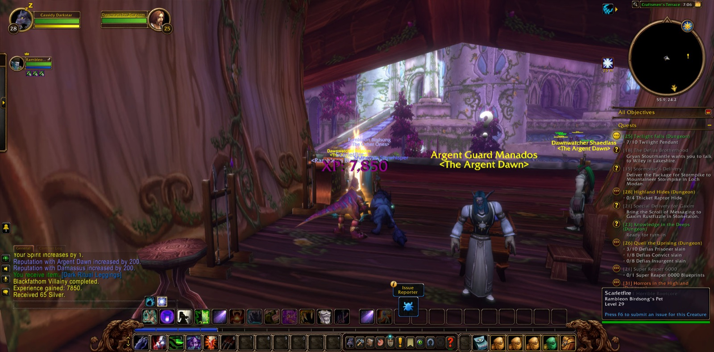
Cassidy Darkstar set out from Nighthaven in Moonglade and came down by Lake Elune'ara into Darkshore. From there he crossed The Veiled Sea to Rut'theran Village and climbed into Darnassus, where he passed among the Cenarion Enclave, the Tradesmen's Terrace and the Warrior's Terrace, and took up the errand called Klockmort's Essentials. He returned over the water to Auberdine and saw Bloom of the Heavens to its end. Then he went south along The Long Wash and Twilight Shore into Ashenvale, by Lake Falathim and The Shrine of Aessina to Astranaar and Maestra's Post, and came at last to The Zoram Strand and the mouth of Blackfathom Deeps.
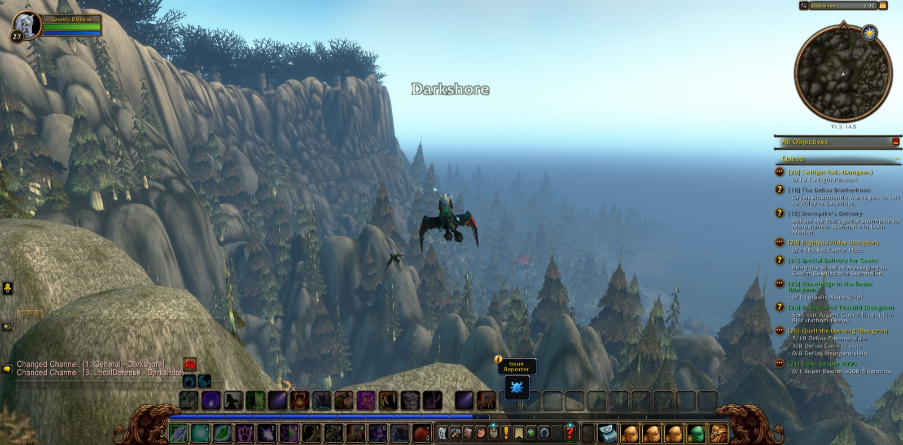
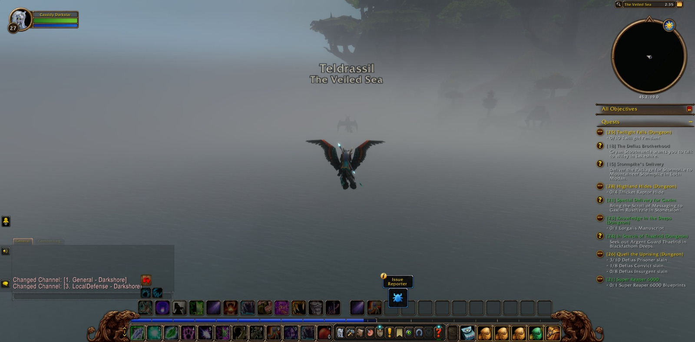
He did not go down alone. Nickf the Paladin and Muse the Shaman were with him in the first descent, Nickf the longer of the two. Together they passed The Drowned Sacellum and came to The Pool of Ask'ar, where Ghamoo-ra was overcome, and the sea witches and myrmidons of Blackfathom fell before them. Uthas the Paladin and Elon the Mage joined him only briefly, and in their company Cassidy gathered the eighth Corrupted Brain Stem. He bore them back to Auberdine, and so Researching the Corruption was finished. On the road once more he met Rambleon the Hunter, who would stay beside him longer than any other, and Nebben the Rogue, who walked with them a little way and then turned aside.
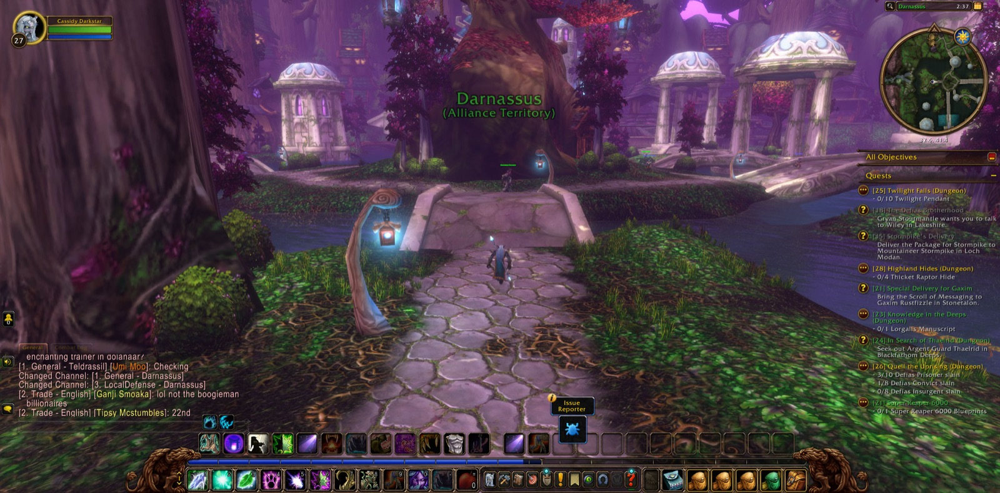
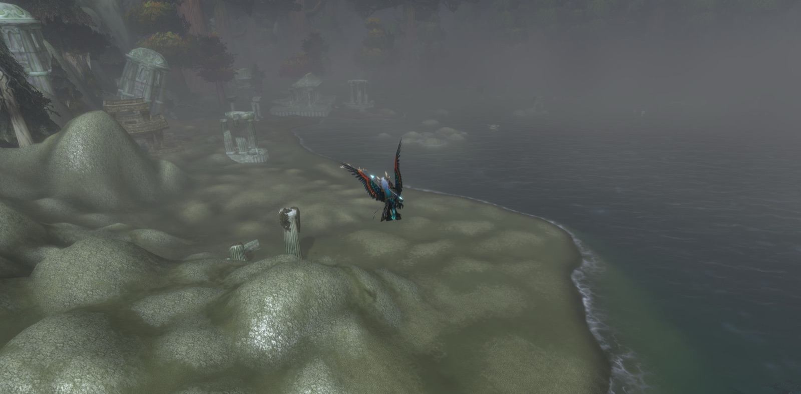
The second descent was the greater. With Dyl and Andy, both Druids of his own calling, and Boozebraid the Shaman, Cassidy returned to the Deeps. Lady Sarevess was slain, and the Lorgalis Manuscript was found. In Search of Thaelrid was brought to its close, and a darker errand was given in its place, Blackfathom Villainy. After that came Gelihast, then Old Serra'kis in The Forgotten Pool, and in the Moonshrine Sanctum Twilight Lord Kelris himself, whose head Cassidy took. Beyond lay Aku'mai's Lair, and Aku'mai was slain there. The four parted in the Temple of the Moon. Upon the Craftsmen's Terrace the head of Kelris was delivered, and Cassidy came into new strength, the twenty-eighth measure of it. A picture was taken there to mark it.
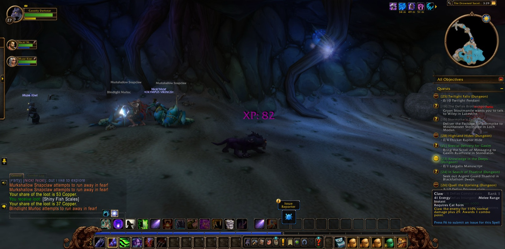
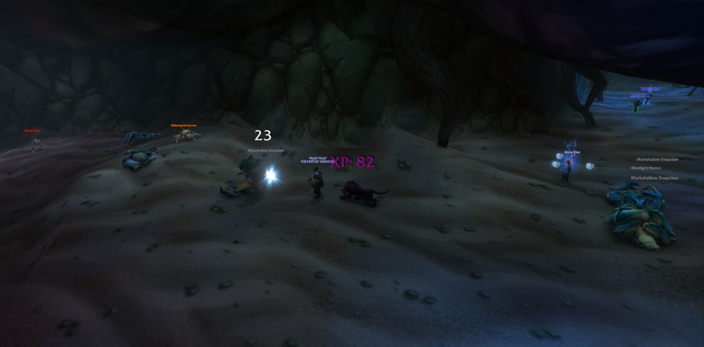
He returned to Ashenvale. In Nightsong Woods the Withered Ancient and the Crazed Ancient fell, and the Iron Shaft was won for Raene's Cleansing. In The Dor'Danil Barrow Den the road was hard, and he fell there more than once. Yet he would not leave it, and Taneel Darkwood and Uthil Mooncall were both brought down, as the errand of the Insane Druids required. At Night Run he freed the Highborne soul, and at the Moonwell and at Maestra's Post he laid down old errands and took up new ones, among them Supplies to Auberdine.
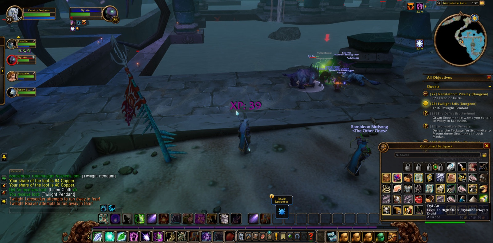
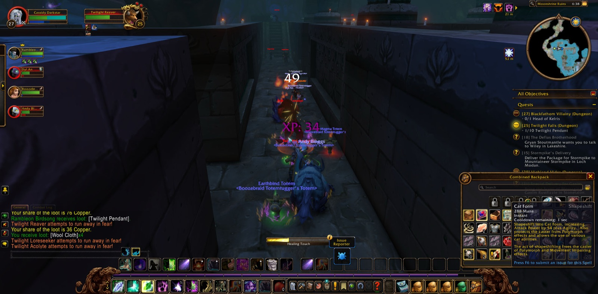
Last of all he came to the Tower of Althalaxx in Darkshore. Atoh the Hunter stood with him there for a short while. After Atoh came Postpartum the Mage and Faelen the Priest, then Karn the Warrior, Dro the Paladin and Sylben the Hunter, each in their turn. The Dark Strand Voidcallers were met and overcome. Rambleon, who had kept faith with him through the Barrow Den and beyond, took his leave at the tower. The others went their ways soon after, and Cassidy stood again with the errand of the Tower of Althalaxx still in his keeping and the road before him.
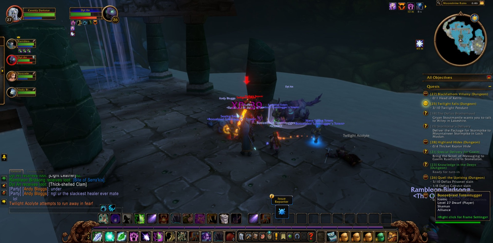
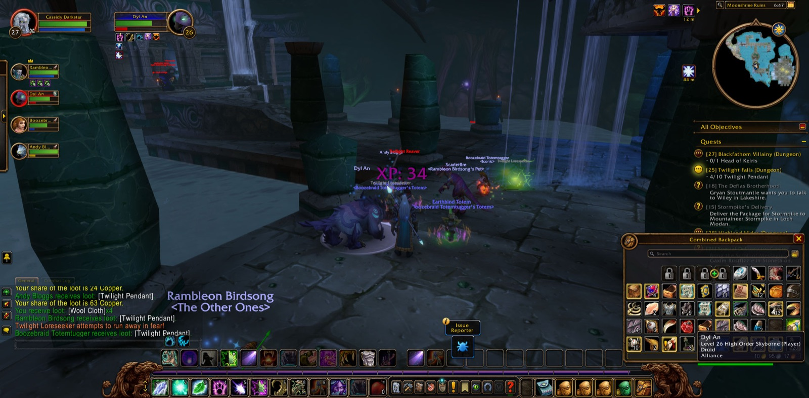
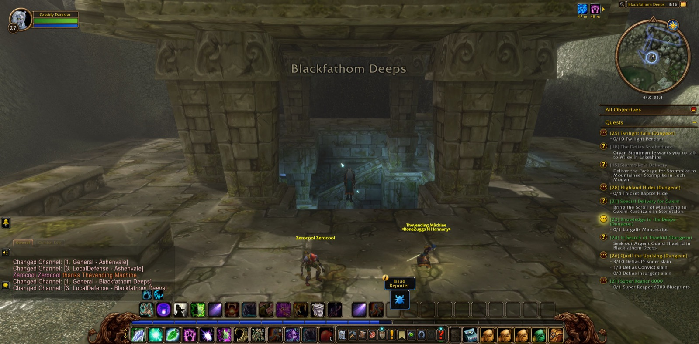
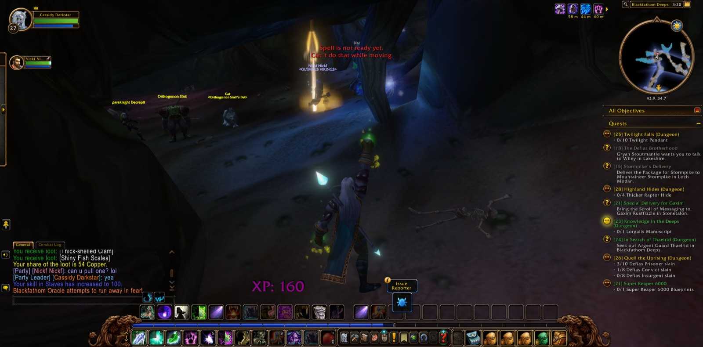
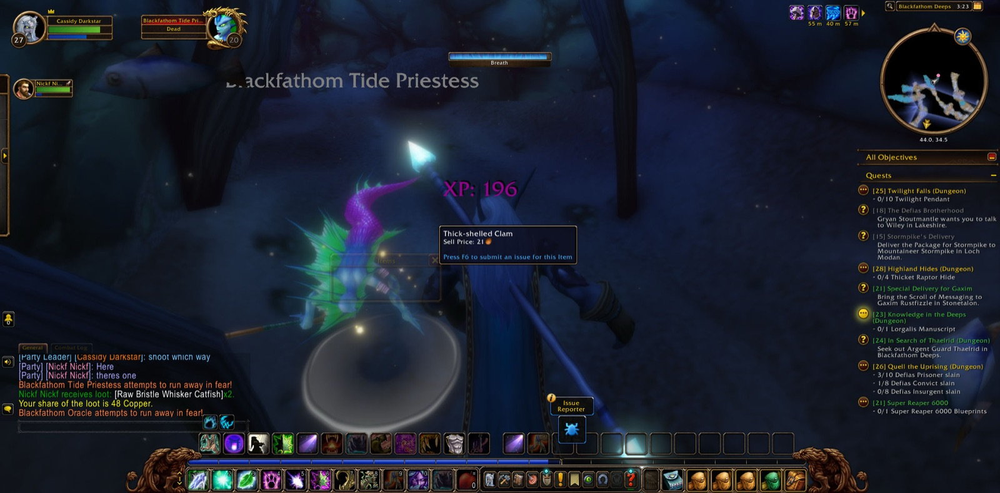
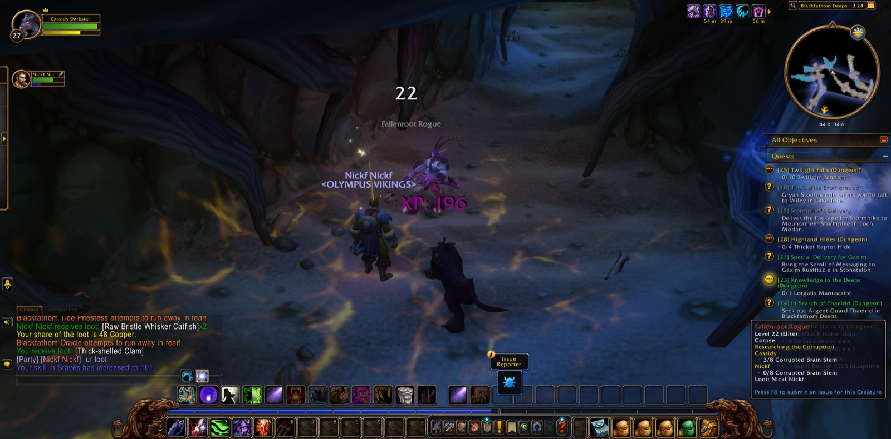
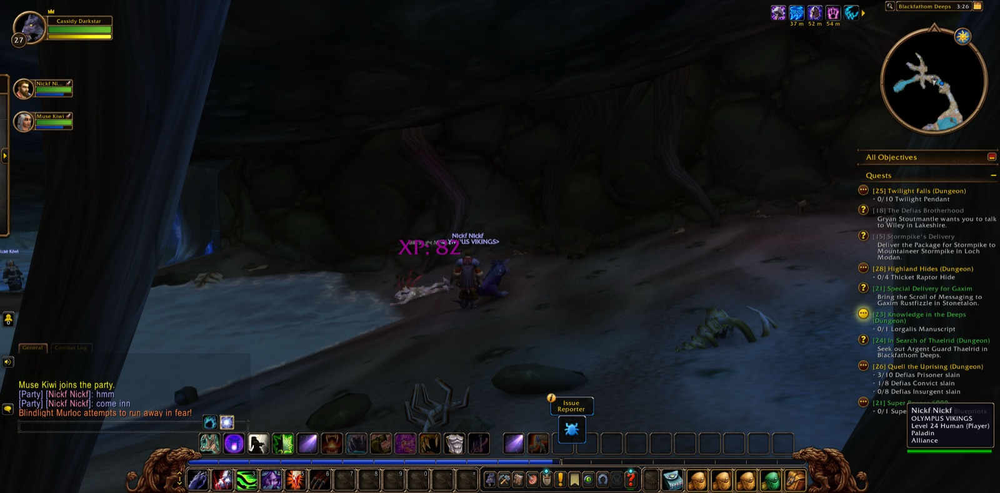
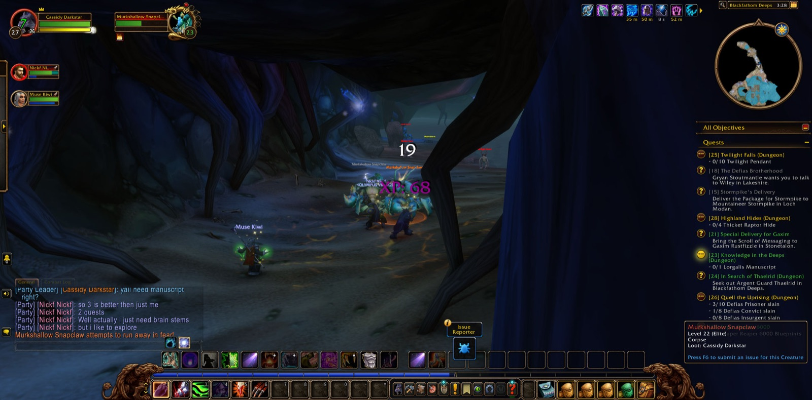